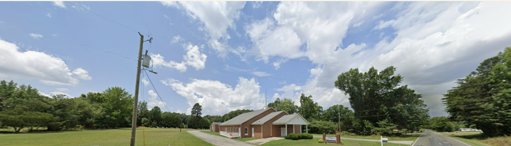

Hester Grove Baptist Church has served the Hurdle Mills community as a place of worship, fellowship, and faith for generations. Rooted in Scripture and grounded in love, we are a congregation committed to changing lives in an unchanging world.
As "the church with a big heart," Hester Grove welcomes all who are seeking a spiritual home — offering worship, Bible study, and a community that supports one another through every season of life. We believe in the power of God's Word to transform hearts, strengthen families, and build a legacy of faith for generations to come.
Whether you're new to faith or have walked with the Lord for years, there's a place for you here.

Whether you're new to faith or have walked with the Lord for years, there's a place for you here.